100,000 years ago, you were food.
If you had been born on the African savanna, your primary goal each day would have been simple: avoid being eaten.
You were not at the top of the food chain. You were somewhere in the middle. Lions hunted you. Hyenas scavenged your kills. Eagles occasionally snatched your babies.
You had a big brain, but that was more of a liability than an asset. It consumed enormous amounts of energy and forced your children to be born helpless. You could make a few stone tools, but so could your cousins, the Neanderthals, who were physically stronger than you in every way.
There was nothing about you that would suggest world domination.
Today, your species controls the fate of every animal on the planet. You have split the atom. You have walked on the moon. You are one button-press away from ending most complex life on Earth.
What happened?
Yuval Noah Harari suggests the answer is unexpected.
We rose to dominance about 70,000 years ago because we learned a skill no other animal possesses: the ability to believe in things that do not exist. Strength and speed were never our greatest assets. Cooperation was.
It is the story of how an animal of no significance came to dominate the entire planet. We will explore the three revolutions that define our history:
- The Cognitive Revolution, which gave us fiction.
- The Agricultural Revolution, which trapped us in a life of hard labor.
- The Scientific Revolution, which gave us the power to end our own story.
By the end, you will discover:
- Why you can trust a stranger only if you both believe in the same imaginary story.
- Why the Agricultural Revolution was actually history's most successful swindle.
- How a single accidental mutation turned Sapiens into the planet's most dangerous ecological force.
- Why money is the most tolerant and successful religion ever devised.
- Why your biochemical baseline means you aren't significantly happier than a hunter-gatherer.
- How we are currently replacing 4 billion years of natural selection with our own design.
The 1-Minute Summary The history of humankind is defined by three revolutions:
- The Cognitive Revolution (70,000 years ago) gave us the ability to believe in fictions.
- The Agricultural Revolution (12,000 years ago) let us multiply but trapped us in harder labor.
- The Scientific Revolution (500 years ago) gave us the power to end our own history.
Sapiens rule the world because we can cooperate flexibly in large numbers. No other animal can do this. Ants cooperate in millions, but they are rigid. Chimpanzees are flexible, but only in small groups.
Our secret weapon is the Imagined Order.
We are the only species that can believe in things that exist purely in our shared imagination. Money, nations, and human rights are not biological realities. They are shared myths.
This imagined reality is the most powerful force on the planet. It allows millions of strangers to work toward a common goal.
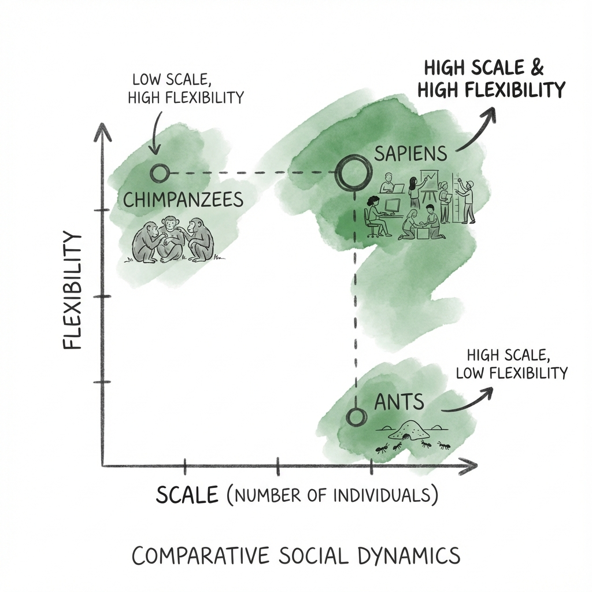
If this breakdown resonates, explore more at longform.online
Module 1: The Cognitive Revolution
For most of our history, humans were not the masters of their domain.
We were mid-sized apes, scurrying through the undergrowth of East Africa. We lived in constant fear of predators and spent most of our time digging up roots, picking berries, and chasing down insects.
We were, in Harari's words, an animal of no significance.
We used to think of ourselves as the only humans. But for at least 2 million years, several human species walked the earth at the same time.
There were the bulky Neanderthals in Europe. There was Homo erectus in Asia, the most durable human species to ever live. There were even dwarves on the island of Flores.
The story of Homo sapiens becoming the last human species standing is a story of mental adaptation, far more than physical power. A Neanderthal could have crushed a Sapiens physically, but our secret weapon was our brain. Having such a large brain, however, came with a massive price tag.
1. The Cost of Thinking
A jumbo brain is a jumbo drain on the body.
In Sapiens, the brain accounts for about 2–3 percent of total body weight. Yet it consumes 25 percent of the body's energy when at rest.
To fuel this, our ancestors had to spend more time searching for food. Our muscles shrank.
We traded biceps for neurons.
Another trade-off was walking upright. Standing on two legs freed our hands for tools, but it narrowed the hips of women.
This made childbirth dangerous.
Evolution favored earlier births, before the baby's head got too big. This means humans are born prematurely compared to other animals.
A colt can trot shortly after birth. A human baby is helpless for years.
This biological reality forced us to become social. You cannot raise a human child alone. It takes a tribe.
2. The Tree of Knowledge
About 70,000 years ago, something changed.
Sapiens began to invent boats, oil lamps, and bows and arrows. They started creating art and practicing religion.
Harari calls this the Cognitive Revolution.
Most researchers believe an accidental genetic mutation changed the inner wiring of our brains. This Tree of Knowledge mutation enabled us to communicate using a new type of language.
Every animal has a language. Bees dance to show the way to food. Green monkeys have specific calls for lion or eagle.
But Sapiens language is uniquely supple. We can produce an infinite number of sentences with distinct meanings.
This allowed us to share two specific types of information that changed everything:
- Gossip: Our language evolved as a way to talk behind each other's backs. Knowing who in the tribe could be trusted and who was a cheat allowed us to expand our groups.
- Fiction: This is the most important feature. Sapiens are the only species that can talk about things that do not exist.
You can never convince a monkey to give you a banana by promising him limitless bananas in monkey heaven.
But Sapiens can.
This ability to speak about fictions allowed us to imagine things collectively. We could weave common myths.
3. The Power of Imagined Realities
Fiction enabled us not merely to imagine things, but to do so together.
Common myths give Sapiens the unprecedented ability to cooperate flexibly in large numbers.
Sociology shows that the natural size of a group bonded by gossip is about 150 individuals.
Most people cannot intimately know more than 150 people. Once a group crosses this threshold, it usually destabilizes and splits.
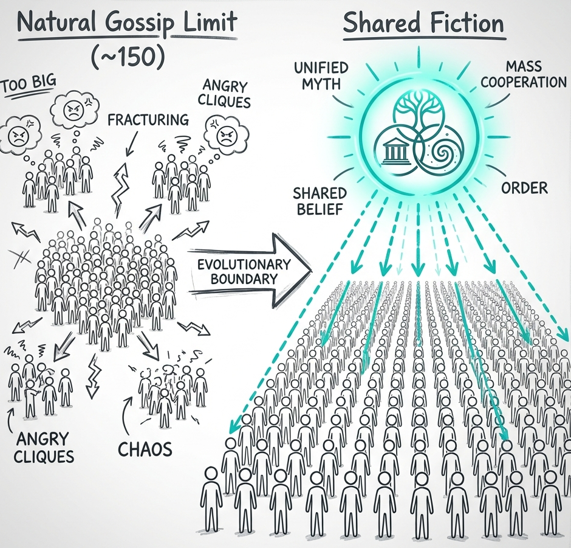
How did Sapiens manage to found cities of tens of thousands and empires of millions?
The secret was the appearance of fiction.
Large numbers of strangers can cooperate successfully if they believe in common myths.
Any large-scale human cooperation is rooted in an imagined reality: modern states, medieval churches, ancient cities.
These are things that exist only in our shared imagination. There are no gods, no nations, and no money outside the stories we tell each other.
Once the Cognitive Revolution happened, Sapiens no longer lived only in the objective reality of rivers and lions.
We started living in a dual reality.
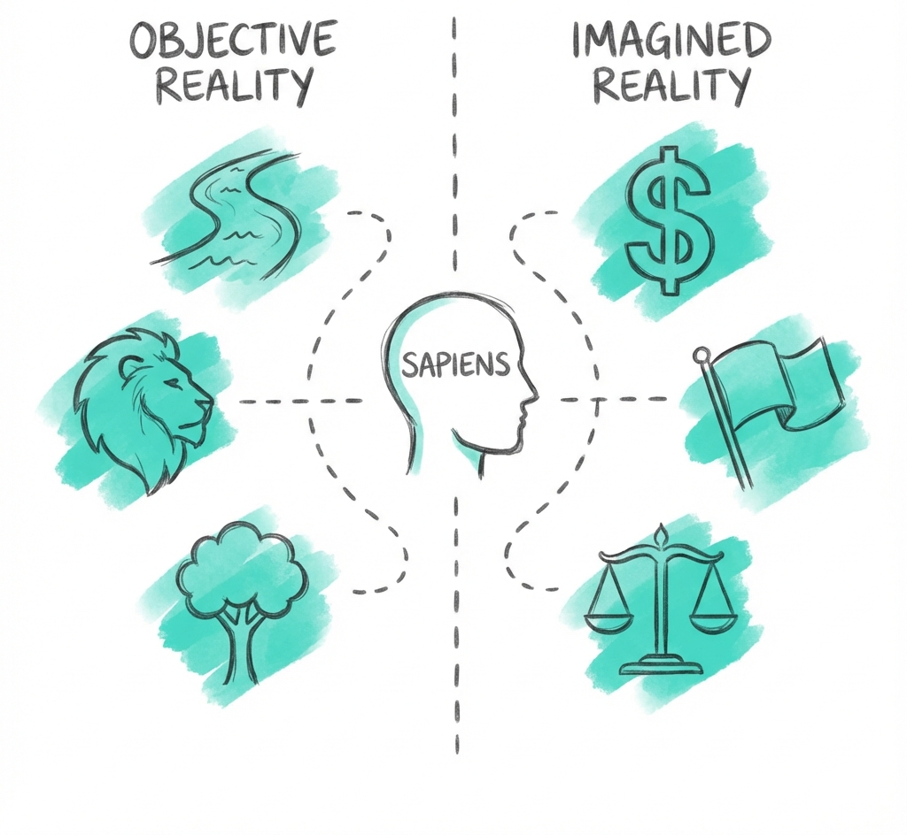
4. The Ecological Serial Killer
Equipped with this new ability to cooperate, Sapiens began to overrun the planet.
And wherever we went, we brought death.
About 45,000 years ago, Sapiens reached Australia. Within a few thousand years, 23 out of the 24 animal species weighing 100 pounds or more were extinct.
The giant diprotodon (a two-and-a-half-ton wombat) vanished, along with the marsupial lion and six-foot kangaroos.
A similar disaster occurred in America 16,000 years ago. Within 2,000 years of Sapiens' arrival, North America lost 34 out of its 47 genera of large mammals.
The mammoths, the giant ground sloths, and the sabre-tooth cats were all wiped out.
The historical record makes Homo sapiens look like an ecological serial killer.
We did not live in harmony with nature. Long before the Industrial Revolution, we held the record for driving the most species to extinction.
We were the most destructive force the animal kingdom had ever produced.
This mastery over the animal world set the stage for the next great transformation. Having cleared the land of giant beasts, Sapiens began to settle down.
But as we would soon find out, the decision to stop wandering was a trap.
Module 2: The Agricultural Trap
For 2.5 million years, humans fed themselves by gathering plants and hunting animals.
They lived in harmony with the natural cycles of the earth. They didn't decide where trees would grow. They didn't decide which goats would breed.
Everything changed about 10,000 years ago.
Sapiens began to devote all their time to manipulating the lives of a few animal and plant species. They sowed seeds. They watered plants. They led sheep to pasture.
This was the Agricultural Revolution.
Scholars once claimed this was a great leap forward. They told a story of humans becoming so smart that they deciphered the secrets of nature.
They said we abandoned the dangerous life of hunting for the pleasant life of farming.
That story is a fantasy.
The Agricultural Revolution was History's Biggest Fraud.
1. Wheat Domesticated Sapiens
If you look at history from the perspective of wheat, it is one of the most successful plants in the history of the earth.
Ten thousand years ago, it was just a wild grass in the Middle East.
Today, it covers nearly a million square miles of the globe.
Wheat did this by manipulating Homo sapiens.
Our bodies did not evolve for farming. We were adapted to climbing trees and running after gazelles.
But wheat demanded that we break our backs clearing fields. It demanded that we weed under the scorching sun. It demanded that we lug heavy buckets of water from the river.
Ancient skeletons prove the cost. Farming brought a plague of ailments. Slipped discs. Arthritis. Hernias.
Wheat did not offer a better diet. It offered a worse one.
It did not offer economic security. A drought or a swarm of locusts could now mean mass starvation.
So what did it offer?
It offered the ability to keep more people alive under worse conditions.
Evolutionary success is measured by the number of DNA copies. From this cold perspective, 1,000 malnourished farmers are better than 100 healthy foragers.
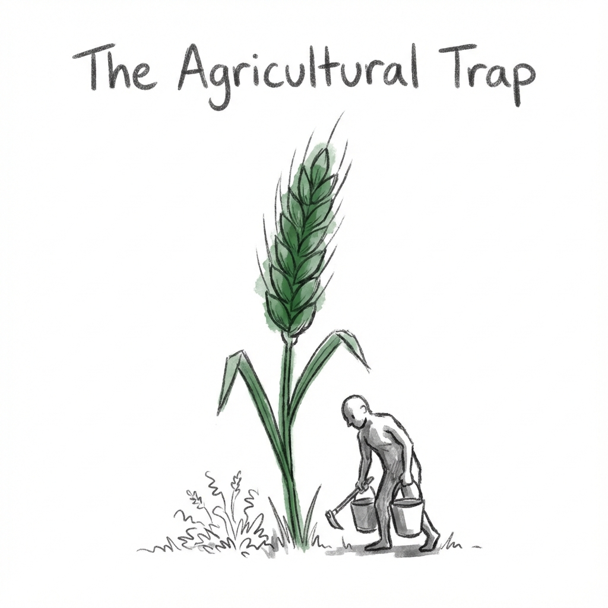
2. The Luxury Trap
Why didn't we just stop when we realized farming was hard?
Because of the luxury trap.
Humanity's search for an easier life released forces that transformed the world in ways nobody wanted.
Every generation made small improvements. They hoed the soil a little deeper. They built a better grain silo.
They thought these changes would make life more secure.
But these improvements led to population growth. Women could have more children because they didn't have to carry them on long treks.
The extra mouths quickly wiped out the food surpluses.
By the time the trap snapped shut, nobody remembered the old way of life.
We had burned our boats. We could not go back to foraging because our numbers were now too large.
This is an iron law of history. Luxuries tend to become necessities.
They spawn new obligations that we can no longer escape.
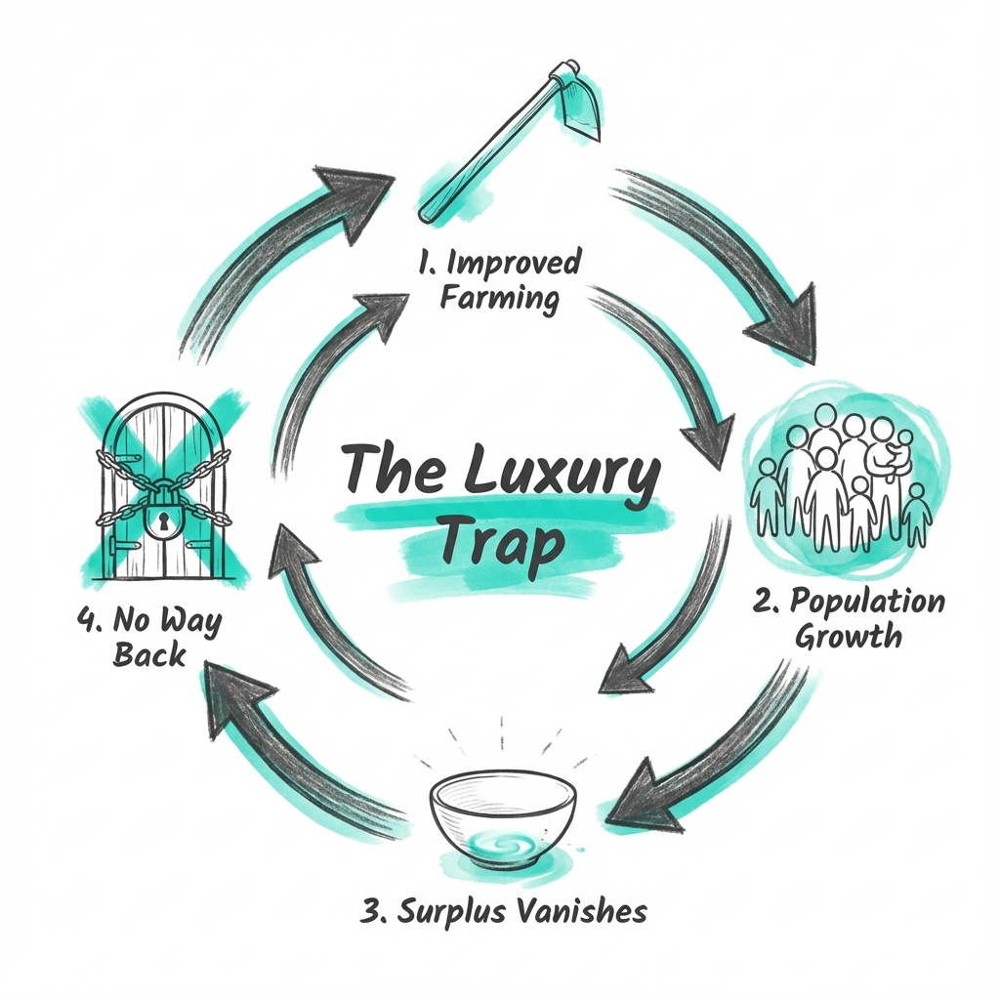
3. The Misery of the Herd
The deal we made with wheat was bad. The deal we made with animals was worse.
From an evolutionary standpoint, chickens and cattle are incredibly successful. There are billions of them today.
But from an individual standpoint, they are the most miserable creatures to ever live.
In the wild, a bull might live for twenty years.
In the dairy industry, a cow is kept in a state of constant pregnancy. Her calves are taken away shortly after birth. She is slaughtered after five years when her production drops.
We have achieved collective power at the cost of individual suffering.
4. The Anxiety of the Future
Foragers lived from hand to mouth. They didn't waste much time thinking about next month.
Farming forced us to live in the future.
The agricultural cycle is seasonal. You work for months in the hope of a harvest.
This created a new kind of mental pressure.
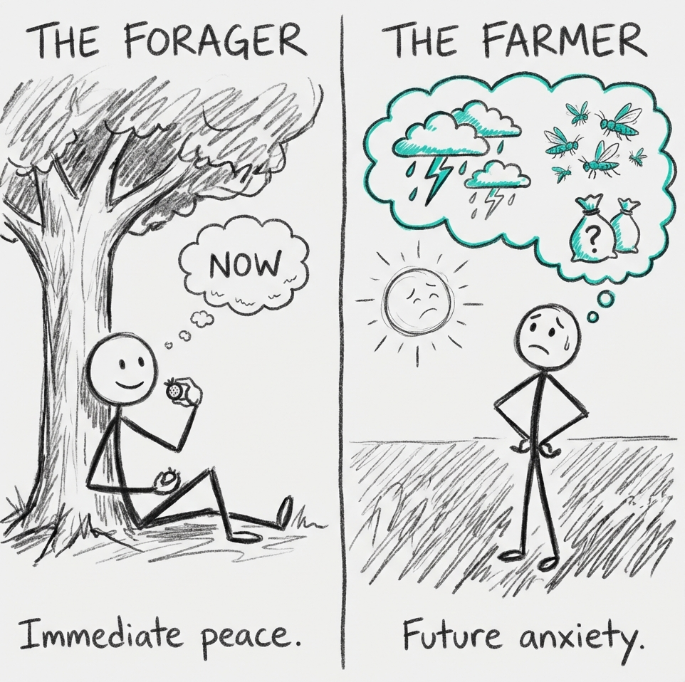
A farmer would lie awake at night, listening to the wind, wondering if the rain would come. Would the locusts return? Would there be enough grain to last the winter?
The anxious peasant became the foundation of every large political system.
The food surpluses produced by these peasants did not go to them. They were confiscated by rulers and elites.
These surpluses fueled the building of empires. They built palaces. They built temples.
History is the story of a few people doing things while everyone else was carrying water buckets.
To keep these millions of people in line, we needed something more than physical force.
We needed a new kind of glue to hold our massive societies together.
Module 3: The Structure of Society
Evolution did not give humans the instincts to play basketball or run an empire.
Ants and bees work together in huge numbers because their cooperation is written into their DNA. Their roles are hard-wired.
Humans are different.
We lack the biological software for mass cooperation. Yet we managed to build cities of millions and trade networks that span the globe.
We did this by creating an Imagined Order.
This is a social structure built not on biological truth but on shared myths.
1. Hammurabi vs. Jefferson
To understand how these myths work, we can compare two of the most famous documents in history.
The Code of Hammurabi from 1776 BC and the American Declaration of Independence from 1776 AD.
Hammurabi’s Code was a manual for cooperation for the Babylonians. It divided people into three classes: superiors, commoners, and slaves.
If a superior man blinded the eye of another superior, his eye was blinded in return.
If he blinded a commoner, he paid 60 shekels of silver.
To the Babylonians, this was not a lie. It was a divine truth.
The American Declaration of Independence says the opposite. It claims that all men are created equal.
If you ask a scientist, they will tell you that people are not created. They evolved.
They did not evolve to be equal. They evolved to be different.
Biologically, there is no such thing as a right. There are only organs and characteristics.
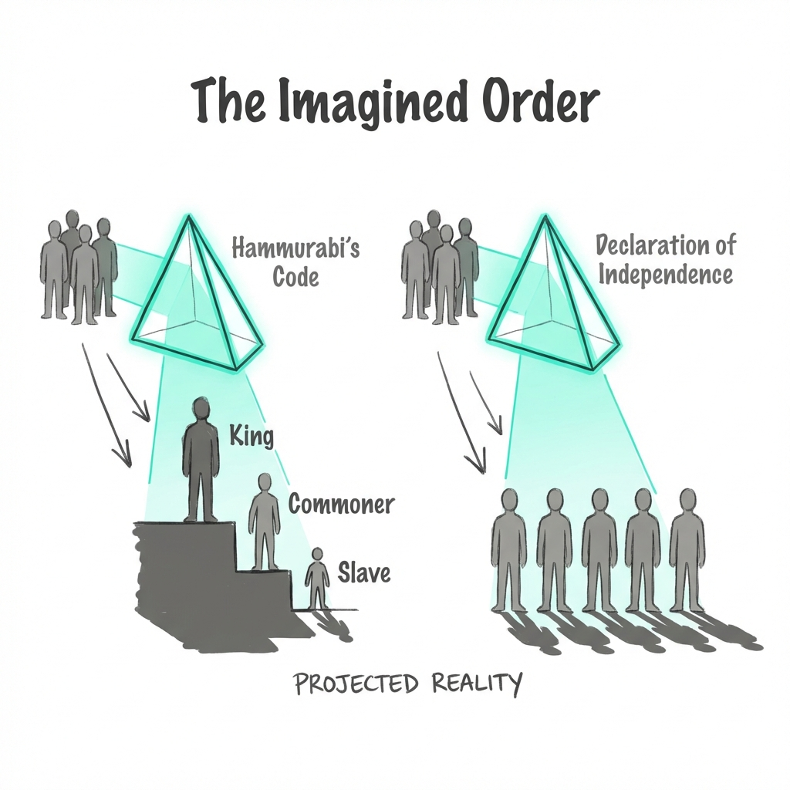
Both Hammurabi and the American founders were wrong in a scientific sense. But they were both right in a social sense.
Their stories allowed millions of strangers to work together.
2. The Prison Walls
Why do we believe these stories so deeply?
It is because the imagined order is embedded in everything we see and touch.
It is woven into our architecture. Modern houses have private rooms for each child. This teaches them they are individuals.
It shapes our desires. We spend thousands of dollars on holidays abroad because we believe in the myth of romantic consumerism.
We think these are our personal choices. But they are programmed by the culture we live in.
Finally, the order is inter-subjective.
This means it exists in the shared imagination of millions.
If I alone stop believing in the dollar, it doesn't matter. But if everyone stops believing in it, it vanishes.
There is no way out of this prison.
When we break down the walls of one imagined order, we usually just step into the yard of a bigger one.
3. Signed, Kushim
As our societies grew, the human brain faced a new problem.
Memory overload.
Our brains are great at remembering where to find berries or who is cheating on whom. They are terrible at storing large amounts of numbers.
To run an empire, you need to collect taxes. You need to track debts.
The Sumerians solved this by inventing writing.
The first recorded name in history is not a king or a prophet. It is an accountant.
His name was Kushim.
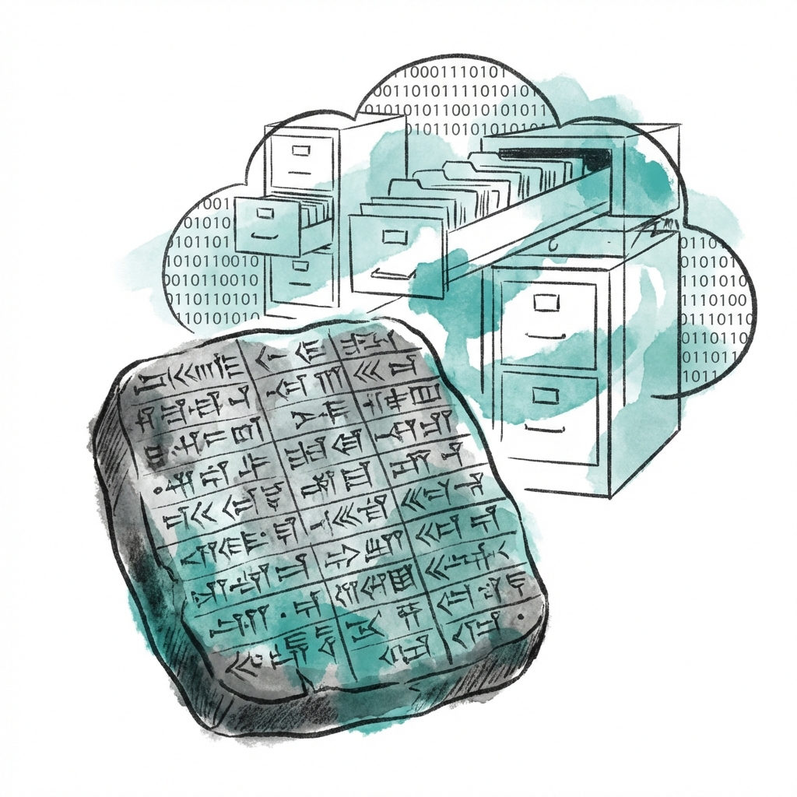
He lived 5,000 years ago and left behind a clay tablet that recorded a delivery of barley.
Writing changed the way humans think.
We moved away from holistic thought and toward compartmentalization. We began to think like filing cabinets.
Today, the world is dominated by a new type of writing: binary script.
The 0s and 1s of computers are now the most important language on earth.
4. There is No Justice in History
Most imagined orders involve some kind of hierarchy.
They divide people into groups. They give power to some and take it from others.
These hierarchies are almost always arbitrary.
The Indian caste system. American racial segregation. The exclusion of women.
None of these have a biological basis. They are the result of chance historical events.
Once a group gains power, they create a vicious circle.
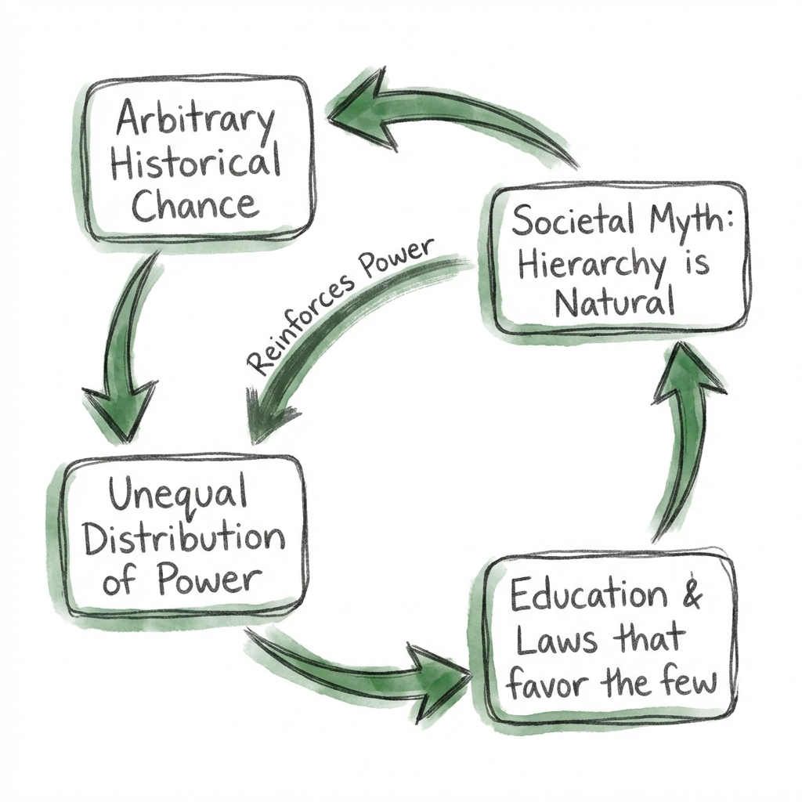
They use their power to stay in power. They control the money and the education.
They claim their position is natural.
White supremacists talked about biological intelligence. Brahmins talked about spiritual purity.
But history shows that most discrimination is just the result of a lucky group staying lucky.
The hierarchy of gender is the most persistent example.
In almost every society, men have had the better deal.
We don't know exactly why. Some say it's muscle power. Some say it's aggression.
But none of these theories fully explain why women have been excluded from jobs that require no physical strength.
Today, these ancient walls are finally starting to crack.
But as the old barriers fall, new forces are working to pull the entire world together into a single system.
Module 4: The Unification of Humankind
Perceiving the direction of history is a matter of vantage point.
If you look at history through a microscope, you see chaos. You see the rise and fall of small kingdoms. You see local wars and internal disputes.
But if you zoom out, if you look at the planet from a cosmic spy satellite, you see a clear pattern.
History is moving relentlessly toward global unity.
For most of our past, Earth was a galaxy of isolated human worlds.
Tasmania. Mesoamerica. The Andean World. These places existed for thousands of years without ever knowing the others were there.
Today, we all share the same geopolitical system. The same science. The same market forces.
This unification was driven by three universal orders that managed to transcend the boundary between us and them.
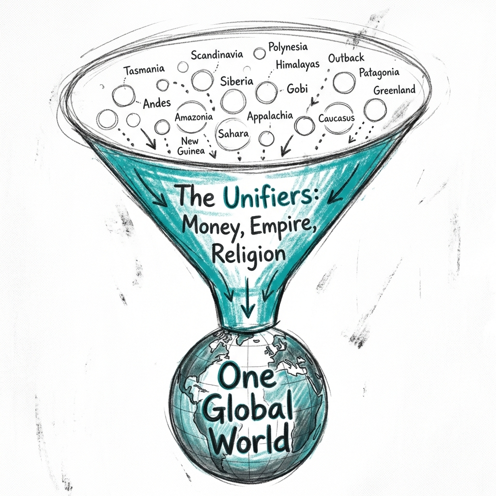
1. The Scent of Money
The most successful conqueror in history is not a general. It is money.
Before the invention of money, people relied on an economy of favors or simple barter.
Barter is effective only when you trade a small range of products. If you have 1,000 different goods, you have to memorize nearly 500,000 different exchange rates.
Money solved this by creating a system of mutual trust.
It is not a material reality. It is a psychological construct.
You are willing to flip hamburgers or sell insurance because you trust that the colored paper you receive can be exchanged for bread or a house.
Money is the most tolerant system ever devised. It is more open-minded than any religion or king.
It does not care if you believe in Christ or Allah. It does not care if you live in a democracy or a dictatorship.
Osama Bin Laden hated American culture. But he was very fond of American dollars.
Money allowed people who didn't even know each other to work toward a common goal. It turned the entire world into a single marketplace.
2. Imperial Visions
The second great unifier was the empire.
In the modern world, empire is a dirty word. We associate it with war and oppression.
But from a historical perspective, empires were the primary reason so many diverse cultures merged into larger units.
An empire is a political order that rules over a large number of distinct ethnic groups and has flexible borders.
They were cultural giants. They swallowed up smaller groups and forced them to adopt a common language, a common law, a common religion.
The Roman Empire turned Greeks, Celts, Gauls, and Jews into Romans.
Eventually, the conquered groups didn't want to be free. They wanted to be the rulers of the empire themselves.
Most of our modern cultures are the leftovers of dead empires. We speak their languages and live by their laws.
The imperial vision was to create a single political order for the benefit of all humans.
3. The Law of Religion
The third unifier was religion.
Historically, most religions were local. They believed in a specific spirit that lived in a specific tree or river.
But the first millennium BC saw the rise of universal religions.
These religions claimed that their truth applied to everyone. Everywhere.
They were missionaries. They wanted to spread their message to the ends of the earth.
Religion gave a divine justification to the imagined order. It made the rules of society seem like the laws of nature.
Buddhism, Christianity, and Islam were the great psychological bridges.
They taught people that there was a higher power that applied to all of humanity, regardless of where they were born.
These three forces, money, empires, and religion, laid the foundation for the global world we live in today.
But the final push toward global dominance came from a new kind of revolution.
One that started with a simple admission.
We do not know.
Module 5: The Scientific Revolution
For most of human history, people believed that everything worth knowing was already known.
The great gods, or the wise ancestors of the past, had already revealed all the important secrets of the universe in the holy books.
If a question was not answered in the Bible, or the Quran, or the Vedas, it was either because the answer was unimportant or because humans were not meant to know it.
Everything changed 500 years ago.
Humankind admitted a very simple but revolutionary fact.
We do not know.
Harari calls this the Discovery of Ignorance.
1. The Ignoramus
The Scientific Revolution was essentially a revolution of ignorance.
The great discovery that launched it was the admission that humans do not have the answers to their most important questions.
Modern science is based on the Latin motto: Ignoramus.
It means "We do not know."
Once we admitted our ignorance, we became obsessed with obtaining new knowledge.
This was a radical break from the past.
In the Middle Ages, if you wanted to understand the world, you studied ancient texts.
Today, if you want to understand the world, you look at the evidence and perform experiments.
We no longer believe that the past holds all the truth. We believe the future does.
2. The Empty Map
To see the impact of this shift, look at the maps of the world.
Medieval maps were full of detail. Even if the cartographers had never been to a place, they filled the space with imaginary monsters and mythical kingdoms.
There were no empty spaces.
In 1507, a map appeared that was different. It showed a huge, empty coastline.
It was the first map to show America.
It was also the first map to admit that there were vast parts of the world that Europeans knew nothing about.
This empty map was a psychological breakthrough.
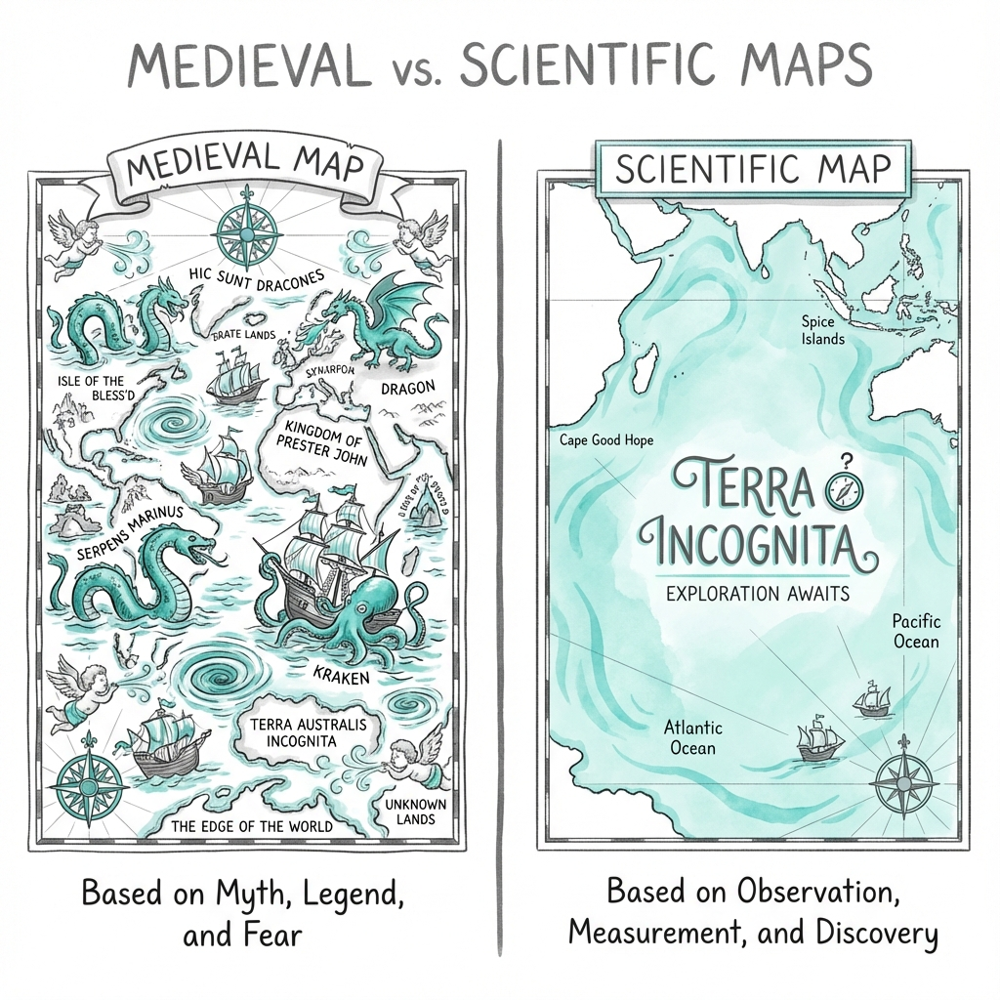
It acted like a magnet. It drew explorers and scientists across the oceans to fill in the blanks.
The admission of ignorance gave us the motivation to conquer the world.
3. The Marriage of Science and Empire
Why did the Scientific Revolution happen in Europe?
In 1500, Europe was a political and cultural backwater. The real power lay in China and the Islamic world.
But Europeans had a unique mindset. They coupled the search for knowledge with the search for territory.
When Captain James Cook sailed to the Pacific in 1768, he didn't just bring soldiers. He brought astronomers and botanists.
He wanted to observe the transit of Venus. He wanted to find new plants.
He also wanted to claim Australia for Great Britain.
This marriage of science and empire was the engine of European dominance.
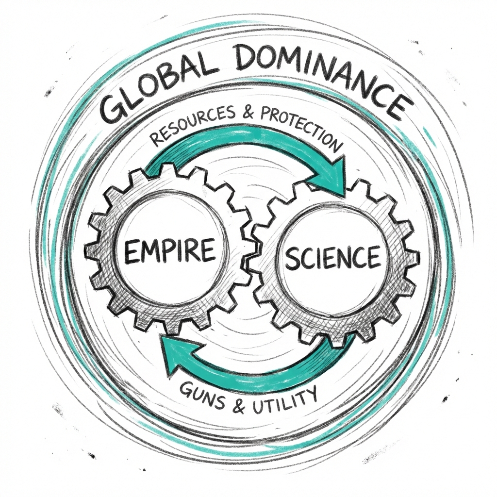
Science gave the empires the technology they needed: better ships, better weapons, better medicine.
In return, empires gave scientists the resources and the protection they needed to study the world.
4. The Capitalist Creed
The Scientific Revolution would have been impossible without a new kind of economic system.
Capitalism.
For most of history, people believed that the global pie was fixed. If one person got a bigger slice, someone else got a smaller one.
This made people reluctant to lend money.
If the economy is a zero-sum game, why would you bet on the future?
The Scientific Revolution changed this by introducing the idea of progress.
If we can discover new things, we can grow the pie.
This led to the creation of credit.
Credit is the ability to build things in the present using money from the future.
It is a bet on the idea that our future selves will be richer than our current selves.
The Capitalist Creed states that economic growth is the supreme good, because growth allows us to solve all our other problems.
If we have more money, we can fund more research. If we fund more research, we can find more cures.
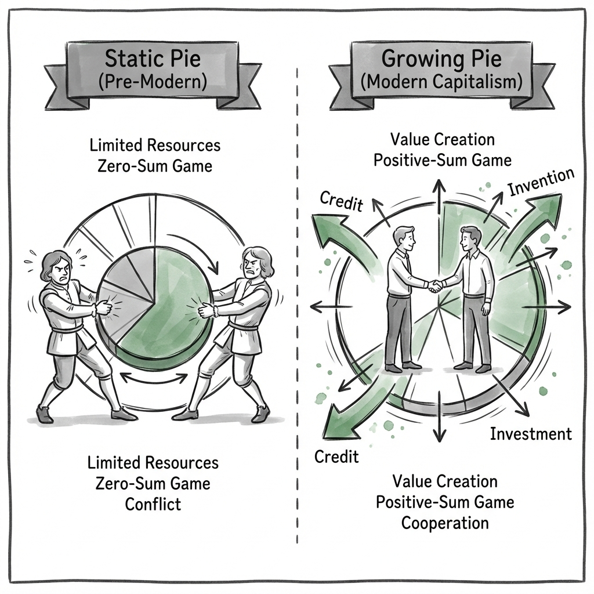
5. The Magic of the Future
This belief in the future created a feedback loop.
Profits were not spent on luxuries. They were reinvested in production.
This created even more growth.
The world changed from a place of tradition to a place of constant transformation.
We began to trust the future more than we trusted the past.
But this relentless pursuit of growth has come with a heavy cost.
It has built a world of incredible power. But it has also unleashed forces that we might not be able to control.
As we move into the modern era, the wheels of industry are turning faster than ever.
And they are headed toward a destination that no one can predict.
Module 6: The Industrial Fate
The marriage of capitalism and science gave birth to a new kind of machine.
For millions of years, life was powered by the sun. Plants captured solar energy. Animals ate the plants. Humans ate the plants and animals.
Everything changed when we learned how to convert heat into movement.
The Industrial Revolution was, at its heart, an energy revolution. It was the discovery that the world is full of energy just waiting to be exploited.
1. The Wheels of Industry
Before the steam engine, if you wanted to move something, you needed muscles. Human muscles or animal muscles.
The steam engine allowed us to tap into the energy stored in coal.
Suddenly, we had a limitless supply of power.
This led to a second realization: we are not running out of energy. We are only running out of the knowledge needed to capture it.
Every few decades, we discover a new energy source. Oil. Electricity. Nuclear power. Solar power.
The Industrial Revolution turned the world into a giant factory. It created a world of constant production and consumption.
But it did something even more radical to our social lives.
2. The Collapse of Family and Community
For most of history, most humans lived in two main frameworks: family and community.
If you were a peasant in 1700, your family was your social security system, your health insurance, your school, your bank.
If you fell ill, your family took care of you. If you were old, your children supported you.
The community was the larger version of the family. It provided protection and social life.
The State and the Market were weak. They rarely intervened in daily life.
The Industrial Revolution destroyed this.
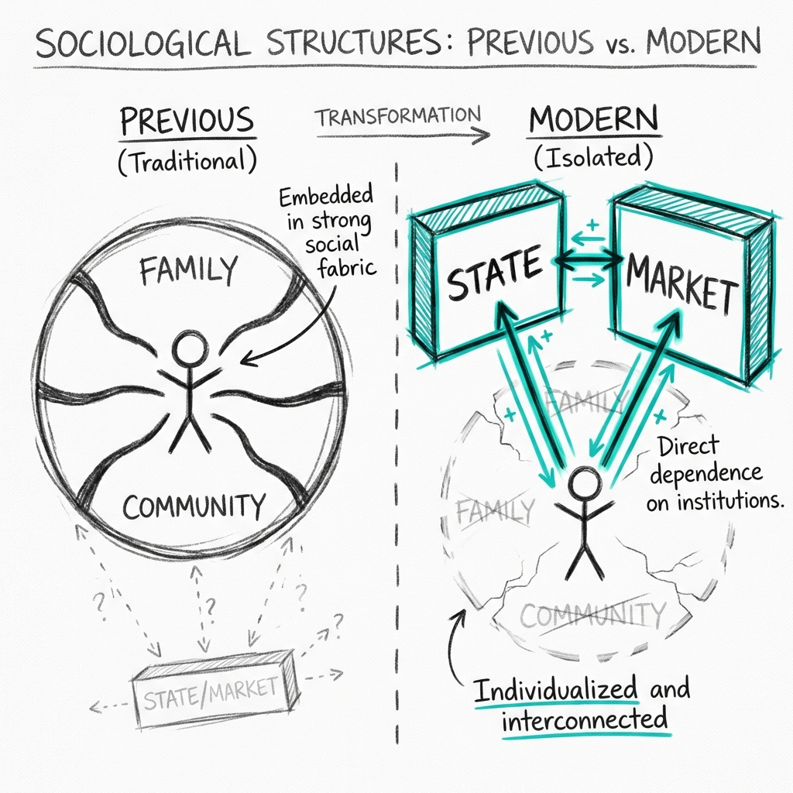
The state and the market offered a new deal to the individual.
"Become an individual," they said. "Marry whoever you want. Work wherever you want. You don't need your family or community anymore. We will take care of you."
Today, the state provides education. The market provides jobs. The pension fund provides for old age.
We have gained incredible freedom. But we have paid for it with a sense of profound alienation and loneliness.
3. And They Lived Happily Ever After?
We are far more powerful than our ancestors.
We have conquered famine. We have cured many diseases. We have reached the moon.
But are we any happier?
Historians rarely ask this question. But it is the most important one.
If all our power doesn't make us feel better, then what is it for?
Science suggests that happiness is not determined by external factors. It is determined by our internal biochemistry.
Our DNA has set our happiness levels to stay relatively stable.
A lottery winner and a person who lost their legs in an accident will, after a year, likely return to the same level of happiness they had before.
This is the great irony of history. We have gained the world, but we haven't changed the chemistry of our own minds.
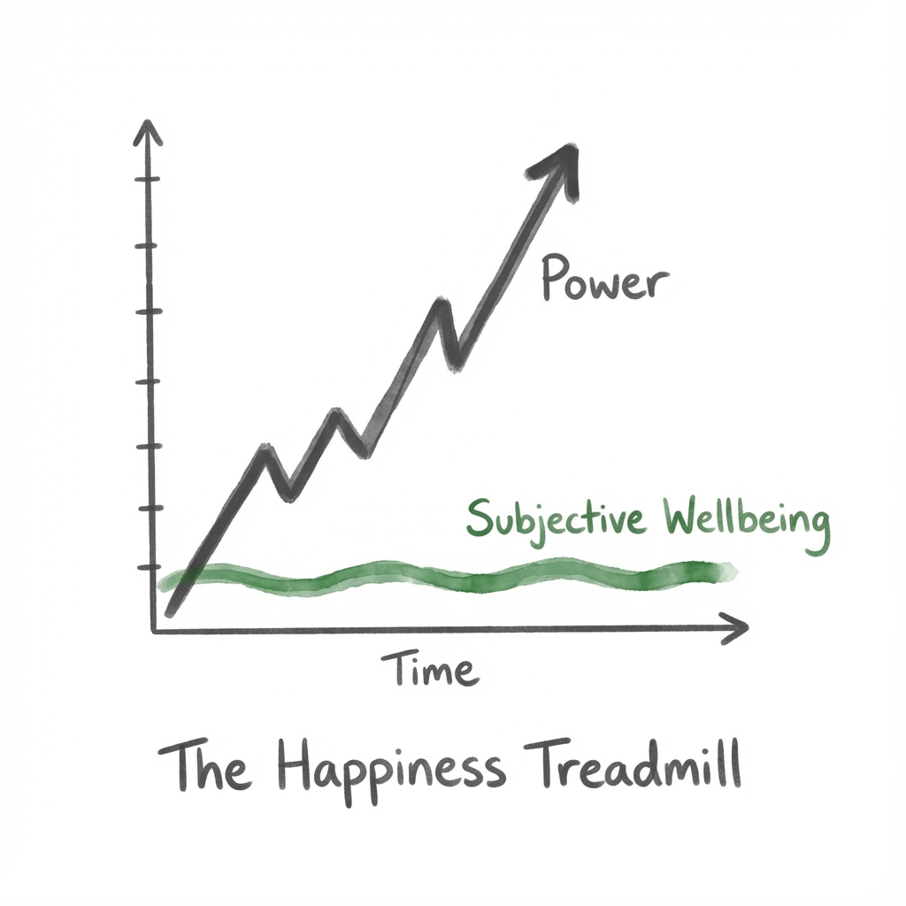
4. The End of Homo Sapiens
The final chapter of our story is currently being written.
For 4 billion years, life on earth was governed by natural selection.
Whether you were a virus or a dinosaur, you evolved according to the blind laws of biology.
We are now replacing natural selection with intelligent design.
Not the intelligent design of a creator god. But our own intelligent design.
Through genetic engineering, cyborg engineering, and inorganic life, we are beginning to break the laws of biology.
We are learning how to design ourselves.
This is the most significant development in the history of life.
It suggests that Homo sapiens as we know it will soon disappear.
We might be replaced by creatures that are as different from us as we are from Neanderthals, or even from amoebas.
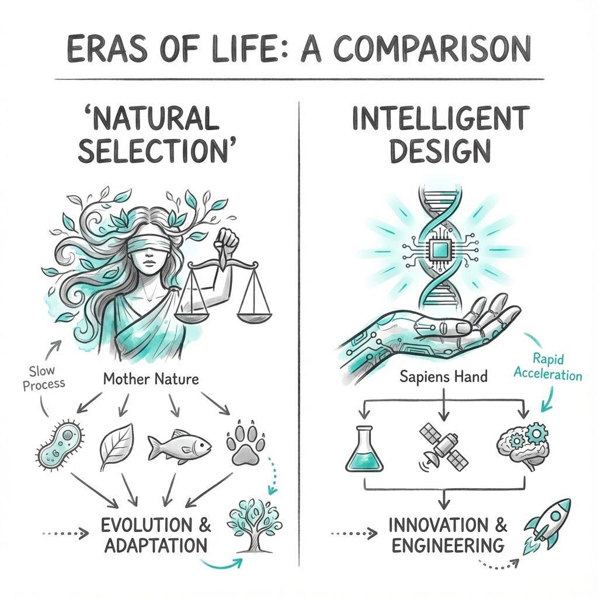
5. The Animal That Became a God
We began as an insignificant ape.
We learned how to gossip, how to imagine, how to farm, how to build empires.
We have now reached the point where we can create life and destroy the planet.
We are more powerful than any of the gods our ancestors imagined.
But we are also more irresponsible.
We have advanced from canoes to galleys to steamships to space shuttles, but nobody knows where we are going.
We are self-made gods, with only the laws of physics to keep us in check.
And we are more dissatisfied than ever.
Is there anything more dangerous than dissatisfied and irresponsible gods who don't know what they want?
Conclusion
100,000 years ago, you were food.
You spent your days avoiding lions and scavenging for scraps. Your brain was big, but your claws were dull. There was nothing about you that suggested world domination.
Today, you are a god.
You have split the atom. You have walked on the moon. You have rewritten the genetic code that created you. You are one button-press away from ending most complex life on Earth.
What changed?
You learned to believe in things that don't exist.
Money. Nations. Human rights. Corporations. None of these are carved into the fabric of the universe. They are stories. Fictions. Shared myths that allow millions of strangers to cooperate toward a common goal.
This is the most important takeaway from the story of Homo sapiens: our world is a product of our imagination.
And because we created these stories, we have the power to change them.
We are the authors of the next chapter.
But here is the paradox. We have gained immense power, yet we have not gained a corresponding sense of meaning. We have built empires that connect billions of people, yet we often feel more alone than the foragers who sat around a campfire 30,000 years ago.
We have extended our lives. We have cured our diseases. But we still struggle to answer why we are here in the first place.
As we stand on the threshold of replacing ourselves with something new, we face a question that no other animal has ever had to ask.
What do we want to want?
The animal that was once food has become the master of creation.
The question is no longer whether we can change the world. The question is whether we have the wisdom to survive our own success.
Every week, one book gets this treatment — fully structured, nothing skipped. Find them all at longform.online